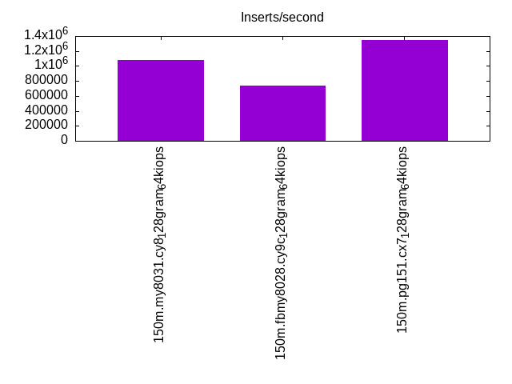

This is a report for the insert benchmark with 150M docs and 22 client(s). It is generated by scripts (bash, awk, sed) and Tufte might not be impressed. An overview of the insert benchmark is here and a short update is here. Below, by DBMS, I mean DBMS+version.config. An example is my8020.c10b40 where my means MySQL, 8020 is version 8.0.20 and c10b40 is the name for the configuration file.
The test server is an c6i.16xl with 32 cores, 64 HW threads (hyperthread enabled), 128G RAM and io2 storage (5T, 64K IOPs). The benchmark was run with 22 clients and there was 1 or 2 connections per client (1 for queries, 1 for inserts). The benchmark loads 150M rows without secondary indexes, creates secondary indexes, loads another 50M rows then does 3 read+write tests for one hour each that do queries as fast as possible with 100, 500 and then 1000 writes/second/client concurrent with the queries. The database is cached by the storage engine and the only IO is for writes. Clients and the DBMS share one server. The per-database configs are in the per-database subdirectories here.
The tested DBMS are:
The numbers are inserts/s for l.i0 and l.i1, indexed docs (or rows) /s for l.x and queries/s for q*.2. The values are the average rate over the entire test for inserts (IPS) and queries (QPS). The range of values for IPS and QPS is split into 3 parts: bottom 25%, middle 50%, top 25%. Values in the bottom 25% have a red background, values in the top 25% have a green background and values in the middle have no color. A gray background is used for values that can be ignored because the DBMS did not sustain the target insert rate. Red backgrounds are not used when the minimum value is within 80% of the max value.
| dbms | l.i0 | l.x | l.i1 | q100.1 | q500.1 | q1000.1 |
|---|---|---|---|---|---|---|
| 150m.my8031.cy8_128gram_64kiops | 1081006 | 668520 | 451972 | 98973 | 101466 | 101083 |
| 150m.fbmy8028.cy9c_128gram_64kiops | 738434 | 1521125 | 217547 | 70300 | 67980 | 65494 |
| 150m.pg151.cx7_128gram_64kiops | 1344328 | 2998788 | 569878 | 365228 | 351809 | 348034 |
This lists the average rate of inserts/s for the tests that do inserts concurrent with queries. For such tests the query rate is listed in the table above. The read+write tests are setup so that the insert rate should match the target rate every second. Cells that are not at least 95% of the target have a red background to indicate a failure to satisfy the target.
| dbms | q100.1 | q500.1 | q1000.1 |
|---|---|---|---|
| my8031.cy8_128gram_64kiops | 2185 | 10924 | 21842 |
| fbmy8028.cy9c_128gram_64kiops | 2184 | 10924 | 21854 |
| pg151.cx7_128gram_64kiops | 2185 | 10927 | 21848 |
| target | 2200 | 11000 | 22000 |
l.i0: load without secondary indexes. Graphs for performance per 1-second interval are here.
Average throughput:
Insert response time histogram: each cell has the percentage of responses that take <= the time in the header and max is the max response time in seconds. For the max column values in the top 25% of the range have a red background and in the bottom 25% of the range have a green background. The red background is not used when the min value is within 80% of the max value.
| dbms | 256us | 1ms | 4ms | 16ms | 64ms | 256ms | 1s | 4s | 16s | gt | max |
|---|---|---|---|---|---|---|---|---|---|---|---|
| my8031.cy8_128gram_64kiops | 18.602 | 81.122 | 0.200 | 0.028 | 0.048 | 0.113 | |||||
| fbmy8028.cy9c_128gram_64kiops | 1.814 | 96.723 | 1.391 | 0.067 | 0.005 | 0.075 | |||||
| pg151.cx7_128gram_64kiops | 56.722 | 43.101 | 0.064 | 0.113 | 0.040 |
Performance metrics for the DBMS listed above. Some are normalized by throughput, others are not. Legend for results is here.
ips qps rps rmbps wps wmbps rpq rkbpq wpi wkbpi csps cpups cspq cpupq dbgb1 dbgb2 rss maxop p50 p99 tag 1081006 0 0 0.0 1692.7 282.6 0.000 0.000 0.002 0.268 166025 35.0 0.154 21 7.0 135.6 14.6 0.113 70225 11188 150m.my8031.cy8_128gram_64kiops 738434 0 0 0.0 1199.0 273.0 0.000 0.000 0.002 0.379 168545 31.3 0.228 27 5.1 5.7 1.6 0.075 40157 8391 150m.fbmy8028.cy9c_128gram_64kiops 1344328 0 0 0.0 2387.9 555.3 0.000 0.000 0.002 0.423 153773 35.1 0.114 17 10.0 27.1 10.1 0.040 109644 54242 150m.pg151.cx7_128gram_64kiops
l.x: create secondary indexes.
Average throughput:
Performance metrics for the DBMS listed above. Some are normalized by throughput, others are not. Legend for results is here.
ips qps rps rmbps wps wmbps rpq rkbpq wpi wkbpi csps cpups cspq cpupq dbgb1 dbgb2 rss maxop p50 p99 tag 668520 0 3746 239.6 13139.3 615.8 0.006 0.367 0.020 0.943 132750 18.3 0.199 18 15.6 144.1 19.1 0.004 NA NA 150m.my8031.cy8_128gram_64kiops 1521125 0 4 0.3 1188.6 269.2 0.000 0.000 0.001 0.181 8882 24.7 0.006 10 7.2 7.7 8.6 0.005 NA NA 150m.fbmy8028.cy9c_128gram_64kiops 2998788 0 0 0.0 3417.6 829.2 0.000 0.000 0.001 0.283 49566 12.5 0.017 3 19.3 44.8 5.0 0.100 NA NA 150m.pg151.cx7_128gram_64kiops
l.i1: continue load after secondary indexes created. Graphs for performance per 1-second interval are here.
Average throughput:
Insert response time histogram: each cell has the percentage of responses that take <= the time in the header and max is the max response time in seconds. For the max column values in the top 25% of the range have a red background and in the bottom 25% of the range have a green background. The red background is not used when the min value is within 80% of the max value.
| dbms | 256us | 1ms | 4ms | 16ms | 64ms | 256ms | 1s | 4s | 16s | gt | max |
|---|---|---|---|---|---|---|---|---|---|---|---|
| my8031.cy8_128gram_64kiops | nonzero | 99.245 | 0.387 | 0.224 | 0.144 | 0.228 | |||||
| fbmy8028.cy9c_128gram_64kiops | 0.229 | 25.260 | 74.471 | 0.038 | 0.002 | 0.115 | |||||
| pg151.cx7_128gram_64kiops | 4.669 | 94.753 | 0.296 | 0.283 | 0.042 |
Performance metrics for the DBMS listed above. Some are normalized by throughput, others are not. Legend for results is here.
ips qps rps rmbps wps wmbps rpq rkbpq wpi wkbpi csps cpups cspq cpupq dbgb1 dbgb2 rss maxop p50 p99 tag 451972 0 4141 64.7 3105.9 355.6 0.009 0.147 0.007 0.806 148197 31.6 0.328 45 27.7 156.3 32.8 0.228 27271 250 150m.my8031.cy8_128gram_64kiops 217547 0 132 16.3 1206.8 278.0 0.001 0.077 0.006 1.308 72361 18.9 0.333 56 12.8 14.0 10.4 0.115 10340 8747 150m.fbmy8028.cy9c_128gram_64kiops 569878 0 0 0.0 2898.0 682.4 0.000 0.000 0.005 1.226 202873 31.7 0.356 36 33.6 82.3 0.0 0.042 35062 20078 150m.pg151.cx7_128gram_64kiops
q100.1: range queries with 100 insert/s per client. Graphs for performance per 1-second interval are here.
Average throughput:
Query response time histogram: each cell has the percentage of responses that take <= the time in the header and max is the max response time in seconds. For max values in the top 25% of the range have a red background and in the bottom 25% of the range have a green background. The red background is not used when the min value is within 80% of the max value.
| dbms | 256us | 1ms | 4ms | 16ms | 64ms | 256ms | 1s | 4s | 16s | gt | max |
|---|---|---|---|---|---|---|---|---|---|---|---|
| my8031.cy8_128gram_64kiops | 81.074 | 18.622 | 0.304 | nonzero | 0.010 | ||||||
| fbmy8028.cy9c_128gram_64kiops | 69.898 | 29.501 | 0.601 | nonzero | nonzero | 0.026 | |||||
| pg151.cx7_128gram_64kiops | 99.977 | 0.023 | nonzero | nonzero | nonzero | 0.021 |
Insert response time histogram: each cell has the percentage of responses that take <= the time in the header and max is the max response time in seconds. For max values in the top 25% of the range have a red background and in the bottom 25% of the range have a green background. The red background is not used when the min value is within 80% of the max value.
| dbms | 256us | 1ms | 4ms | 16ms | 64ms | 256ms | 1s | 4s | 16s | gt | max |
|---|---|---|---|---|---|---|---|---|---|---|---|
| my8031.cy8_128gram_64kiops | 99.905 | 0.095 | 0.011 | ||||||||
| fbmy8028.cy9c_128gram_64kiops | 3.183 | 96.302 | 0.515 | 0.015 | |||||||
| pg151.cx7_128gram_64kiops | 98.445 | 1.151 | 0.404 | 0.026 |
Performance metrics for the DBMS listed above. Some are normalized by throughput, others are not. Legend for results is here.
ips qps rps rmbps wps wmbps rpq rkbpq wpi wkbpi csps cpups cspq cpupq dbgb1 dbgb2 rss maxop p50 p99 tag 2185 98973 0 0.0 401.6 11.7 0.000 0.000 0.184 5.486 380597 29.4 3.845 190 28.2 156.8 33.3 0.010 4459 2431 150m.my8031.cy8_128gram_64kiops 2184 70300 0 0.0 30.7 6.5 0.000 0.000 0.014 3.055 270124 29.6 3.842 269 11.5 11.8 31.3 0.026 3100 1981 150m.fbmy8028.cy9c_128gram_64kiops 2185 365228 0 0.0 1896.2 61.4 0.000 0.000 0.868 28.797 1395872 32.6 3.822 57 34.3 79.9 0.0 0.021 16701 14176 150m.pg151.cx7_128gram_64kiops
q500.1: range queries with 500 insert/s per client. Graphs for performance per 1-second interval are here.
Average throughput:
Query response time histogram: each cell has the percentage of responses that take <= the time in the header and max is the max response time in seconds. For max values in the top 25% of the range have a red background and in the bottom 25% of the range have a green background. The red background is not used when the min value is within 80% of the max value.
| dbms | 256us | 1ms | 4ms | 16ms | 64ms | 256ms | 1s | 4s | 16s | gt | max |
|---|---|---|---|---|---|---|---|---|---|---|---|
| my8031.cy8_128gram_64kiops | 82.243 | 17.480 | 0.276 | nonzero | nonzero | 0.119 | |||||
| fbmy8028.cy9c_128gram_64kiops | 68.567 | 30.703 | 0.730 | nonzero | nonzero | 0.017 | |||||
| pg151.cx7_128gram_64kiops | 99.974 | 0.025 | 0.001 | nonzero | 0.012 |
Insert response time histogram: each cell has the percentage of responses that take <= the time in the header and max is the max response time in seconds. For max values in the top 25% of the range have a red background and in the bottom 25% of the range have a green background. The red background is not used when the min value is within 80% of the max value.
| dbms | 256us | 1ms | 4ms | 16ms | 64ms | 256ms | 1s | 4s | 16s | gt | max |
|---|---|---|---|---|---|---|---|---|---|---|---|
| my8031.cy8_128gram_64kiops | 99.644 | 0.355 | nonzero | nonzero | 0.121 | ||||||
| fbmy8028.cy9c_128gram_64kiops | 0.433 | 33.963 | 65.591 | 0.013 | 0.023 | ||||||
| pg151.cx7_128gram_64kiops | 0.119 | 74.440 | 24.295 | 1.146 | 0.031 |
Performance metrics for the DBMS listed above. Some are normalized by throughput, others are not. Legend for results is here.
ips qps rps rmbps wps wmbps rpq rkbpq wpi wkbpi csps cpups cspq cpupq dbgb1 dbgb2 rss maxop p50 p99 tag 10924 101466 0 0.0 410.1 17.7 0.000 0.000 0.038 1.657 392680 30.4 3.870 192 37.5 166.0 41.7 0.119 4619 2605 150m.my8031.cy8_128gram_64kiops 10924 67980 0 0.0 96.2 22.4 0.000 0.000 0.009 2.100 264327 30.5 3.888 287 14.5 15.9 77.1 0.017 3006 1982 150m.fbmy8028.cy9c_128gram_64kiops 10927 351809 0 0.0 1530.2 108.6 0.000 0.000 0.140 10.179 1350768 33.3 3.839 61 39.4 74.6 0.0 0.012 15999 13697 150m.pg151.cx7_128gram_64kiops
q1000.1: range queries with 1000 insert/s per client. Graphs for performance per 1-second interval are here.
Average throughput:
Query response time histogram: each cell has the percentage of responses that take <= the time in the header and max is the max response time in seconds. For max values in the top 25% of the range have a red background and in the bottom 25% of the range have a green background. The red background is not used when the min value is within 80% of the max value.
| dbms | 256us | 1ms | 4ms | 16ms | 64ms | 256ms | 1s | 4s | 16s | gt | max |
|---|---|---|---|---|---|---|---|---|---|---|---|
| my8031.cy8_128gram_64kiops | 82.498 | 17.234 | 0.267 | nonzero | 0.011 | ||||||
| fbmy8028.cy9c_128gram_64kiops | 67.125 | 31.925 | 0.950 | nonzero | nonzero | 0.031 | |||||
| pg151.cx7_128gram_64kiops | 99.966 | 0.031 | 0.002 | 0.001 | 0.015 |
Insert response time histogram: each cell has the percentage of responses that take <= the time in the header and max is the max response time in seconds. For max values in the top 25% of the range have a red background and in the bottom 25% of the range have a green background. The red background is not used when the min value is within 80% of the max value.
| dbms | 256us | 1ms | 4ms | 16ms | 64ms | 256ms | 1s | 4s | 16s | gt | max |
|---|---|---|---|---|---|---|---|---|---|---|---|
| my8031.cy8_128gram_64kiops | 99.658 | 0.323 | 0.019 | 0.024 | |||||||
| fbmy8028.cy9c_128gram_64kiops | 0.019 | 13.804 | 86.141 | 0.036 | 0.039 | ||||||
| pg151.cx7_128gram_64kiops | 0.019 | 81.264 | 17.682 | 1.035 | 0.036 |
Performance metrics for the DBMS listed above. Some are normalized by throughput, others are not. Legend for results is here.
ips qps rps rmbps wps wmbps rpq rkbpq wpi wkbpi csps cpups cspq cpupq dbgb1 dbgb2 rss maxop p50 p99 tag 21842 101083 0 0.0 1075.0 41.8 0.000 0.000 0.049 1.959 396567 31.3 3.923 198 53.5 182.1 56.2 0.011 4587 2653 150m.my8031.cy8_128gram_64kiops 21854 65494 0 0.0 199.7 45.9 0.000 0.000 0.009 2.149 259136 31.5 3.957 308 19.9 21.4 82.8 0.031 2926 1966 150m.fbmy8028.cy9c_128gram_64kiops 21848 348034 0 0.0 2000.2 176.4 0.000 0.000 0.092 8.269 1341226 34.2 3.854 63 63.8 112.4 0.0 0.015 15812 13585 150m.pg151.cx7_128gram_64kiops
l.i0: load without secondary indexes
Performance metrics for all DBMS, not just the ones listed above. Some are normalized by throughput, others are not. Legend for results is here.
ips qps rps rmbps wps wmbps rpq rkbpq wpi wkbpi csps cpups cspq cpupq dbgb1 dbgb2 rss maxop p50 p99 tag 1081006 0 0 0.0 1692.7 282.6 0.000 0.000 0.002 0.268 166025 35.0 0.154 21 7.0 135.6 14.6 0.113 70225 11188 150m.my8031.cy8_128gram_64kiops 738434 0 0 0.0 1199.0 273.0 0.000 0.000 0.002 0.379 168545 31.3 0.228 27 5.1 5.7 1.6 0.075 40157 8391 150m.fbmy8028.cy9c_128gram_64kiops 1344328 0 0 0.0 2387.9 555.3 0.000 0.000 0.002 0.423 153773 35.1 0.114 17 10.0 27.1 10.1 0.040 109644 54242 150m.pg151.cx7_128gram_64kiops
l.x: create secondary indexes
Performance metrics for all DBMS, not just the ones listed above. Some are normalized by throughput, others are not. Legend for results is here.
ips qps rps rmbps wps wmbps rpq rkbpq wpi wkbpi csps cpups cspq cpupq dbgb1 dbgb2 rss maxop p50 p99 tag 668520 0 3746 239.6 13139.3 615.8 0.006 0.367 0.020 0.943 132750 18.3 0.199 18 15.6 144.1 19.1 0.004 NA NA 150m.my8031.cy8_128gram_64kiops 1521125 0 4 0.3 1188.6 269.2 0.000 0.000 0.001 0.181 8882 24.7 0.006 10 7.2 7.7 8.6 0.005 NA NA 150m.fbmy8028.cy9c_128gram_64kiops 2998788 0 0 0.0 3417.6 829.2 0.000 0.000 0.001 0.283 49566 12.5 0.017 3 19.3 44.8 5.0 0.100 NA NA 150m.pg151.cx7_128gram_64kiops
l.i1: continue load after secondary indexes created
Performance metrics for all DBMS, not just the ones listed above. Some are normalized by throughput, others are not. Legend for results is here.
ips qps rps rmbps wps wmbps rpq rkbpq wpi wkbpi csps cpups cspq cpupq dbgb1 dbgb2 rss maxop p50 p99 tag 451972 0 4141 64.7 3105.9 355.6 0.009 0.147 0.007 0.806 148197 31.6 0.328 45 27.7 156.3 32.8 0.228 27271 250 150m.my8031.cy8_128gram_64kiops 217547 0 132 16.3 1206.8 278.0 0.001 0.077 0.006 1.308 72361 18.9 0.333 56 12.8 14.0 10.4 0.115 10340 8747 150m.fbmy8028.cy9c_128gram_64kiops 569878 0 0 0.0 2898.0 682.4 0.000 0.000 0.005 1.226 202873 31.7 0.356 36 33.6 82.3 0.0 0.042 35062 20078 150m.pg151.cx7_128gram_64kiops
q100.1: range queries with 100 insert/s per client
Performance metrics for all DBMS, not just the ones listed above. Some are normalized by throughput, others are not. Legend for results is here.
ips qps rps rmbps wps wmbps rpq rkbpq wpi wkbpi csps cpups cspq cpupq dbgb1 dbgb2 rss maxop p50 p99 tag 2185 98973 0 0.0 401.6 11.7 0.000 0.000 0.184 5.486 380597 29.4 3.845 190 28.2 156.8 33.3 0.010 4459 2431 150m.my8031.cy8_128gram_64kiops 2184 70300 0 0.0 30.7 6.5 0.000 0.000 0.014 3.055 270124 29.6 3.842 269 11.5 11.8 31.3 0.026 3100 1981 150m.fbmy8028.cy9c_128gram_64kiops 2185 365228 0 0.0 1896.2 61.4 0.000 0.000 0.868 28.797 1395872 32.6 3.822 57 34.3 79.9 0.0 0.021 16701 14176 150m.pg151.cx7_128gram_64kiops
q500.1: range queries with 500 insert/s per client
Performance metrics for all DBMS, not just the ones listed above. Some are normalized by throughput, others are not. Legend for results is here.
ips qps rps rmbps wps wmbps rpq rkbpq wpi wkbpi csps cpups cspq cpupq dbgb1 dbgb2 rss maxop p50 p99 tag 10924 101466 0 0.0 410.1 17.7 0.000 0.000 0.038 1.657 392680 30.4 3.870 192 37.5 166.0 41.7 0.119 4619 2605 150m.my8031.cy8_128gram_64kiops 10924 67980 0 0.0 96.2 22.4 0.000 0.000 0.009 2.100 264327 30.5 3.888 287 14.5 15.9 77.1 0.017 3006 1982 150m.fbmy8028.cy9c_128gram_64kiops 10927 351809 0 0.0 1530.2 108.6 0.000 0.000 0.140 10.179 1350768 33.3 3.839 61 39.4 74.6 0.0 0.012 15999 13697 150m.pg151.cx7_128gram_64kiops
q1000.1: range queries with 1000 insert/s per client
Performance metrics for all DBMS, not just the ones listed above. Some are normalized by throughput, others are not. Legend for results is here.
ips qps rps rmbps wps wmbps rpq rkbpq wpi wkbpi csps cpups cspq cpupq dbgb1 dbgb2 rss maxop p50 p99 tag 21842 101083 0 0.0 1075.0 41.8 0.000 0.000 0.049 1.959 396567 31.3 3.923 198 53.5 182.1 56.2 0.011 4587 2653 150m.my8031.cy8_128gram_64kiops 21854 65494 0 0.0 199.7 45.9 0.000 0.000 0.009 2.149 259136 31.5 3.957 308 19.9 21.4 82.8 0.031 2926 1966 150m.fbmy8028.cy9c_128gram_64kiops 21848 348034 0 0.0 2000.2 176.4 0.000 0.000 0.092 8.269 1341226 34.2 3.854 63 63.8 112.4 0.0 0.015 15812 13585 150m.pg151.cx7_128gram_64kiops
Insert response time histogram
256us 1ms 4ms 16ms 64ms 256ms 1s 4s 16s gt max tag 0.000 18.602 81.122 0.200 0.028 0.048 0.000 0.000 0.000 0.000 0.113 my8031.cy8_128gram_64kiops 0.000 1.814 96.723 1.391 0.067 0.005 0.000 0.000 0.000 0.000 0.075 fbmy8028.cy9c_128gram_64kiops 0.000 56.722 43.101 0.064 0.113 0.000 0.000 0.000 0.000 0.000 0.040 pg151.cx7_128gram_64kiops
TODO - determine whether there is data for create index response time
Insert response time histogram
256us 1ms 4ms 16ms 64ms 256ms 1s 4s 16s gt max tag 0.000 nonzero 99.245 0.387 0.224 0.144 0.000 0.000 0.000 0.000 0.228 my8031.cy8_128gram_64kiops 0.000 0.229 25.260 74.471 0.038 0.002 0.000 0.000 0.000 0.000 0.115 fbmy8028.cy9c_128gram_64kiops 0.000 4.669 94.753 0.296 0.283 0.000 0.000 0.000 0.000 0.000 0.042 pg151.cx7_128gram_64kiops
Query response time histogram
256us 1ms 4ms 16ms 64ms 256ms 1s 4s 16s gt max tag 81.074 18.622 0.304 nonzero 0.000 0.000 0.000 0.000 0.000 0.000 0.010 my8031.cy8_128gram_64kiops 69.898 29.501 0.601 nonzero nonzero 0.000 0.000 0.000 0.000 0.000 0.026 fbmy8028.cy9c_128gram_64kiops 99.977 0.023 nonzero nonzero nonzero 0.000 0.000 0.000 0.000 0.000 0.021 pg151.cx7_128gram_64kiops
Insert response time histogram
256us 1ms 4ms 16ms 64ms 256ms 1s 4s 16s gt max tag 0.000 0.000 99.905 0.095 0.000 0.000 0.000 0.000 0.000 0.000 0.011 my8031.cy8_128gram_64kiops 0.000 3.183 96.302 0.515 0.000 0.000 0.000 0.000 0.000 0.000 0.015 fbmy8028.cy9c_128gram_64kiops 0.000 0.000 98.445 1.151 0.404 0.000 0.000 0.000 0.000 0.000 0.026 pg151.cx7_128gram_64kiops
Query response time histogram
256us 1ms 4ms 16ms 64ms 256ms 1s 4s 16s gt max tag 82.243 17.480 0.276 nonzero 0.000 nonzero 0.000 0.000 0.000 0.000 0.119 my8031.cy8_128gram_64kiops 68.567 30.703 0.730 nonzero nonzero 0.000 0.000 0.000 0.000 0.000 0.017 fbmy8028.cy9c_128gram_64kiops 99.974 0.025 0.001 nonzero 0.000 0.000 0.000 0.000 0.000 0.000 0.012 pg151.cx7_128gram_64kiops
Insert response time histogram
256us 1ms 4ms 16ms 64ms 256ms 1s 4s 16s gt max tag 0.000 0.000 99.644 0.355 nonzero nonzero 0.000 0.000 0.000 0.000 0.121 my8031.cy8_128gram_64kiops 0.000 0.433 33.963 65.591 0.013 0.000 0.000 0.000 0.000 0.000 0.023 fbmy8028.cy9c_128gram_64kiops 0.000 0.119 74.440 24.295 1.146 0.000 0.000 0.000 0.000 0.000 0.031 pg151.cx7_128gram_64kiops
Query response time histogram
256us 1ms 4ms 16ms 64ms 256ms 1s 4s 16s gt max tag 82.498 17.234 0.267 nonzero 0.000 0.000 0.000 0.000 0.000 0.000 0.011 my8031.cy8_128gram_64kiops 67.125 31.925 0.950 nonzero nonzero 0.000 0.000 0.000 0.000 0.000 0.031 fbmy8028.cy9c_128gram_64kiops 99.966 0.031 0.002 0.001 0.000 0.000 0.000 0.000 0.000 0.000 0.015 pg151.cx7_128gram_64kiops
Insert response time histogram
256us 1ms 4ms 16ms 64ms 256ms 1s 4s 16s gt max tag 0.000 0.000 99.658 0.323 0.019 0.000 0.000 0.000 0.000 0.000 0.024 my8031.cy8_128gram_64kiops 0.000 0.019 13.804 86.141 0.036 0.000 0.000 0.000 0.000 0.000 0.039 fbmy8028.cy9c_128gram_64kiops 0.000 0.019 81.264 17.682 1.035 0.000 0.000 0.000 0.000 0.000 0.036 pg151.cx7_128gram_64kiops